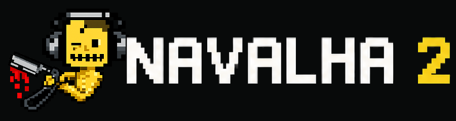
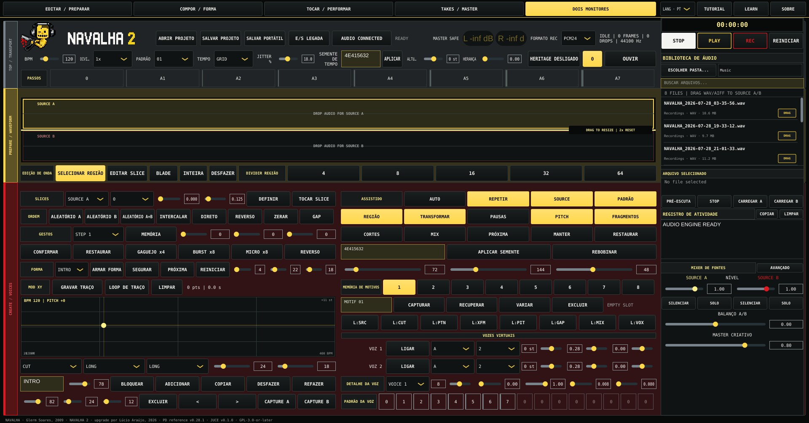

Dos materias primas
Fuentes independientes alimentan una gramática compartida de corte y recombinación. Son materia, no decks.
Un instrumento de interpretación para material grabado.
Navalha 2 convierte dos fuentes de sonido en fragmentos, patrones, gestos y formas reproducibles. No es un deck doble ni un sampler convencional: el corte en sí se convierte en un instrumento.
Paquetes para Linux (.deb, AppImage, .tar.gz), Windows y macOS. Si Windows o macOS dice que el programa no pudo verificarse o que puede contener software malicioso (o algo parecido), no lo borre — siga la
instalación paso a paso

Fuente → corte → patrón → gesto → forma
Navalha comenzó como un instrumento de Pure Data de Glerm Soares. Navalha 2 preserva ese linaje al tiempo que lo expande a un entorno escénico impulsado por gestos y de dos fuentes dirigido por Lúcio Araújo. La migración nativa JUCE/C++ mantiene el instrumento PD/web v0.28.1 como referencia funcional hasta que se complete la aceptación humana.
Fuentes independientes alimentan una gramática compartida de corte y recombinación. Son materia, no decks.
Regiones, divisiones, BLADE y deshacer remodelan el acceso a la fuente dejando intacta la grabación original.
TRACE registra un movimiento a través de BPM y tono. FORM organiza estados más amplios sin aplanar la intervención en vivo.
Los patrones, las voces virtuales y las decisiones asistidas siguen siendo reversibles y subordinadas a PLAY, STOP y REC.
Glerm Soares crea el instrumento Pure Data y su característico flujo de trabajo de corte/secuenciación.
La interfaz crece en torno a la edición de fuentes no destructivas, patrones, gestos, grabación y flujos de trabajo maestros.
La versión PD/web sigue siendo la base explícita para las decisiones sobre migración y paridad.
JUCE/C++ v0.1.0 establece el núcleo en tiempo real, la interfaz nativa, los proyectos portátiles y la base de seguridad de salida.
Un instrumento, cuatro espacios de trabajo
Una primera actuación en ocho movimientos
Abra AUDIO SETUP, elija el dispositivo de salida, la frecuencia de muestreo y el búfer. Comience con OUTPUT TRIM atenuado.
Coloque material WAV en las FUENTES A y B. Utilice la Vista previa para escuchar sin reemplazar ninguna de las fuentes.
Seleccione un intervalo útil en la forma de onda, divídalo y luego refine con BLADE. La edición sigue siendo no destructiva.
Coloque los eventos A, B o GAP en la cuadrícula de pasos. Elija GRID, FREE o JITTER como comportamiento de sincronización.
Utilice STUTTER, BURST, MICRO y REVERSE; grabe un XY TRACE u organice escenas FORM más amplias.
Habilite sólo los vocabularios del intérprete asistido que desee. Sus ediciones siguen siendo limitadas y reversibles.
PLAY inicia el instrumento; STOP invalida los gestos pendientes. MASTER CREATIVE y OUTPUT TRIM cumplen funciones distintas.
Elija PCM16, PCM24 o float32, presione REC y luego revise el WAV finalizado en TAKE Timeline.
La aplicación nativa trata el aprendizaje como una superficie de performance, no como una ayuda superpuesta. Diez capítulos recorren el camino de la materia a la toma, mientras el panel contextual LEARN mantiene disponible el sentido de cada control en el momento de uso — en EN/PT/FR/ES.
Una toma es una decisión hecha audible
REC captura la misma señal posterior a la seguridad que llega al dispositivo y al medidor: sin ruta de exportación oculta ni mezcla sustitutiva. Una toma preserva el momento en que corte, gesto y forma se convierten en una decisión musical que puede volver a oírse, describirse, compararse y llevarse adelante.
Cada WAV finalizado conserva su identidad técnica y sus metadatos opcionales. Puede volver a SOURCE A o B sin reemplazar el material original ni ocultar el recorrido que lo produjo.
TAKE Timeline convierte la grabación en un espacio editorial: escuchar, anotar, valorar, comparar y conservar la receta de una decisión antes de que se convierta en memoria sin contexto.
Las herramientas TRACK y ALBUM no prometen hacerlo todo más fuerte. Preparan una segunda pasada cuidadosa: nivel, secuencia, espacios, fundidos y evidencias permanecen visibles antes de que una toma se convierta en una edición.
PERFORM → TAKE →REVISIÓN→ MASTER →OBRA / EDICIÓN
Un shell nativo, no una imagen de la aplicación web
La versión actual de JUCE mantiene los controles de edición, interpretación, composición y mezcla visibles en un instrumento nativo.

DSP nativo con límites explícitos
La aplicación está construida en C++20 con JUCE 8. Su ruta en tiempo real evita la asignación y bloquea la devolución de llamada de audio. Se verifica la compilación actual de Linux; Windows y macOS siguen siendo objetivos de validación planificados.
Evidencia automatizada: contratos centrales, renderizado dorado, estrés, remoción de grabación, códecs de proyecto, protección sin cabeza y verificación cruzada independiente de pico verdadero de FFmpeg.10/10 pruebas aprobadas en GNU/Linux.
Publicado como trabajo en progreso, medido sin inflación.
Glerm Soares — author, developer and creator of the original Navalha Pure Data instrument.
Lúcio Araújo — conception and direction of Navalha 2 upgrades, musician-facing workflow, interface decisions, testing and musical evaluation.
OpenAI / ChatGPT — implementation assistance, migration tooling, documentation and test preparation under Lúcio Araújo’s direction.
Código fuente de Navalha 2: GPL-3.0 o posterior. JUCE 8 se obtiene por separado bajo AGPL-3.0 únicamente o una licencia JUCE comercial. Consulte el estado de la licencia antes de distribuir archivos binarios.